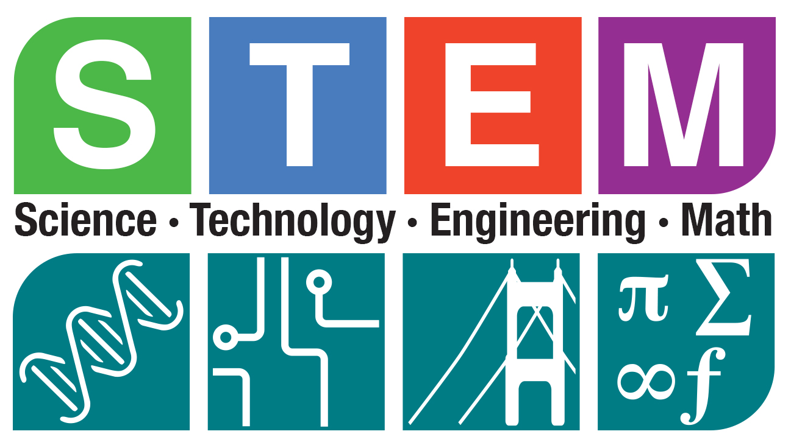

Susie S. Li
Fostering a Foundation for Future Innovators
I have taught a multitude of diverse students my whole career. One thing I have learned is that students can succeed when they are provided opportunities. As an aspiring educational leader, I am deeply committed to cultivating an educational environment where every student has the opportunity to excel, innovate, and contribute meaningfully to society. Central to my philosophy is the integration of STEM (Science, Technology, Engineering, and Mathematics) education across all grade levels.
STEM education serves as a powerful catalyst for fostering critical thinking, problem-solving skills, and creativity in students. By incorporating hands-on, inquiry-based learning experiences, students are not only equipped with foundational knowledge in STEM disciplines but also develop essential skills such as collaboration, communication, and resilience. Furthermore, STEM education promotes a growth mindset, encouraging students to embrace challenges and view failures as opportunities for growth.
At the heart of my philosophy is a commitment to equity and access in education. I believe that every student, regardless of background or ability, deserves equitable access to high-quality STEM education. To achieve this, it is essential to create inclusive learning environments that celebrate diversity, accommodate varying learning styles, and provide support for all students to succeed. Additionally, I am dedicated to addressing systemic barriers that may prevent underrepresented groups, including females and minorities, from fully participating in STEM fields. By fostering a culture of inclusivity and equity, we can unlock the full potential of all students and cultivate a diverse pipeline of future STEM leaders.
Early exposure to computer science is a cornerstone of my approach to STEM education. In today's digital age, proficiency in computational thinking and digital literacy are essential skills for success in virtually every field. By introducing computer science concepts as early as kindergarten, we can spark students' curiosity, creativity, and interest in technology from a young age. Through age-appropriate activities, such as coding simple directions games, robotics, and interactive simulations, students develop a foundational understanding of computational concepts and gain confidence in their ability to use technology as a tool for learning and innovation.
My educational philosophy is rooted in the belief early exposure to STEM education can profoundly impact students' trajectories, equipping them with the skills and mindset necessary to thrive in the dynamic landscape of the 21st century. Through nurturing a culture of innovation, equity, and inclusivity, we empower every student to embrace their full potential as lifelong learners, adept critical thinkers, and adept problem solvers, poised to navigate an ever-evolving and interconnected global society.
